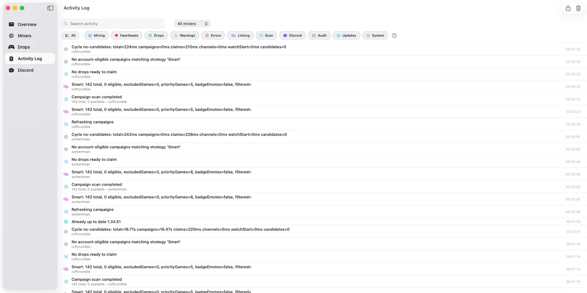

This is the operator's view of the same system described in Game Rules & Fallback Streamers. Read that first if you only run your own accounts; come back here when other people's miners are attached to your instance.
Each miner mines from one ordered list of games. That list is built from your global list, the miner's personal list, or both, depending on the miner's priority mode. Exclusions and the mining strategy are yours alone and apply to every miner on the instance.
What You Control, What They Control
Priorities are stored per Twitch account, not per Discord user. Someone who has two accounts linked to your instance has two independent personal lists, and each of those miners can be in a different priority mode.
| Setting | Scope | Who can change it |
|---|---|---|
| Global priority list | Whole instance | Operator only, in Settings > Mining > Manage Game Rules. |
| Excluded games | Whole instance | Operator only. Hosted users cannot exclude games, and cannot mine around your exclusions. |
| Mining strategy | Whole instance | Operator only. There is one strategy for every miner. |
| Personal priority list | One Twitch account | The account's owner, from the Web Dashboard or SwiftBot. You can also edit it from the Miners view. |
| Priority mode | One Twitch account | Both. The owner sets it on the dashboard; you can override it per miner in the Miners view. |
| Fallback streamer | One game rule | Operator only, attached to a game in Game Rules. |

The Three Priority Modes
Every miner is in exactly one mode. The mode decides which lists are used to build that miner's effective priority order.
| Mode | Effective priority list |
|---|---|
| Global | Your global list only. The miner follows the house queue and ignores anything in its own personal list. |
| Global + Personal | The miner's personal games first, in their order, then your global games appended after them. Duplicates are collapsed to their earliest position. |
| Personal | The miner's personal games only. Your global list is not used for that miner. |
A new miner starts in Global. The first time its owner prioritises a game, it moves to Global + Personal automatically, so their pick goes to the front without silently dropping your house list. Nobody has to understand the modes to get a sensible result.
Worked example. Your global list is Rust, Sea of Thieves, ARK. A hosted miner's personal list is ARK, Rust Legacy.
- Global: Rust → Sea of Thieves → ARK
- Global + Personal: ARK → Rust Legacy → Rust → Sea of Thieves (ARK appears once, at its earliest position)
- Personal: ARK → Rust Legacy
Strategy Is Instance-Wide
The mining strategy in Settings > Mining is a single setting shared by every miner you host. It does not change what is on a list; it changes how much the list matters against campaign end dates.
| Strategy | Effect across hosted miners |
|---|---|
| Smart | Campaigns ending soonest go first for everyone; priority order only breaks ties. Fewest expired campaigns overall, and the mode that surprises hosted users most often. |
| Prefer prioritised games | Each miner works its own effective list from the top, then falls back to anything else eligible. The best default when people expect their pick to be honoured. |
| Only prioritised games | Anything not on the miner's effective list is discarded. Predictable, but miners idle whenever their listed games have no eligible live campaign. |
Only prioritised games plus a miner in Personal mode with an empty personal list leaves that miner with nothing to mine at all. It reports no eligible campaigns and waits indefinitely. Check for this first when one hosted account earns nothing while the rest are fine.
How a Miner Picks Its Next Campaign
Once a miner's effective list exists, SwiftMiner filters its campaigns to those that can actually be attempted, then sorts what is left. The sort applies these rules in order:
- Live games beat dead games. A game with no verifiable live channel is demoted below games that have one, in every strategy. Priority position never rescues a game nobody is streaming.
- Strategy decides the main key. Under Smart, the earliest end date wins and priority only breaks ties. Under the two priority strategies, being on the list wins first, then list position, then end date.
- Partly earned drops finish first. When everything above ties, the campaign whose next drop is closest to completing is chosen, because banked minutes are per campaign and are lost if its streams dry up.
- Otherwise the existing order is kept, so selection stays stable between scans.
The miner then verifies a live channel is genuinely advertising that exact campaign before it starts watching. A channel playing the right game is not enough.
What a Priority Cannot Do
Most operator support questions land here. Prioritising changes preference and ordering only. It does not override Twitch.
- It cannot mine a campaign that has ended, is disabled, or has no remaining drop that can still be earned by watching.
- It cannot turn a subscriber-only reward into a watch-time reward.
- It cannot invent a live channel, or bypass a campaign restricted to specific channels.
- It cannot beat an exclusion. An excluded game is removed before ordering, for every miner, whatever their personal list says.
- It cannot deliver a reward that needs a publisher account link (EA, Ubisoft, Riot, and similar) until the owner links it.
A campaign whose publisher account is not linked is only attempted when its game is prioritised for that specific miner. Twitch will still track the watch progress, so the drop is waiting once the owner links their account. This is per miner: a game sitting in your global list does not unlock it for a miner in Personal mode.
When a Change Takes Effect
Priority edits made from the Web Dashboard, SwiftBot, or the Miners view are applied to the running miner immediately and force a refresh of that miner. What follows is not always an instant stream switch.
- An idle or waiting miner re-selects on the next scan, normally within seconds of the refresh.
- A miner mid-drop keeps its current campaign if the active drop is within ten minutes of completing, rather than throwing away banked minutes. The exception is a preempting campaign whose own window closes within the hour, which is allowed to take over.
- Otherwise the active watch loop re-evaluates campaigns about every five minutes, so a new top priority that is live is usually picked up inside that window.
- A global list edit reaches every miner in Global or Global + Personal mode at once; miners in Personal mode are untouched.
Tell people to expect "within a few minutes", not "instantly". A miner that is happily earning is deliberately reluctant to move.
Seeing Who Changed What
Changes made by hosted users are written to the activity log with the Twitch username that made them, so remote edits are never invisible to you. You will see entries for a priority mode change, and for games added to or removed from a personal list.

When a miner is doing something unexpected, read the log before changing settings: it usually shows either a remote edit you did not make, or a channel-verification message explaining why a higher game was skipped.
Operator Setups That Work
A shared house queue
Leave every miner in Global and use Prefer prioritised games. You curate one list, everyone gets the same rewards, and support questions collapse to one place. Best for a small group farming the same games.
House queue with personal picks
Keep Prefer prioritised games and let people move themselves to Global + Personal by prioritising anything on the dashboard. Their picks lead, your list catches everything after. This is the setup most groups end up in.
Everyone farms their own thing
Put miners in Personal mode and keep the global list short, for exclusions and fallbacks rather than ordering. Expect to answer "why is my miner idle" more often, and avoid Only prioritised games here unless every list is well maintained.
Pushing a limited-time campaign
Put the game at the top of the global list. Remember it will not reach miners in Personal mode: either message those owners, or temporarily switch them to Global + Personal from the Miners view, which preserves their personal list underneath.
Several miners on one game
Enable Spread miners across streams in Settings > Mining. Twitch counts one watch session per account, so separate accounts on the same campaign are fine; spreading them across channels simply reduces the blast radius when one stream ends.
Operator FAQ
Someone prioritised a game and it is still mining something else. Why?
Almost always the strategy. Under Smart, the campaign ending soonest wins and their pick is only a tiebreaker. If you want picks honoured, use Prefer prioritised games. If the strategy is already that, check whether their game has a live channel advertising that exact campaign right now.
Can a hosted user mine a game I excluded?
No. Exclusions are applied before ordering and cover every miner on the instance, including games on someone's personal list.
Can I set different strategies for different people?
No. The strategy is instance-wide. Per-person differences are expressed through priority modes and lists instead.
Do I have to approve someone's priority changes?
No, and there is no approval queue. Owners manage their own personal list and mode; the changes are logged, and you can override the mode or edit the list from the Miners view at any time.
Someone's miner shows "Global" but they swear they set games. What happened?
Either you moved that miner to Global from the Miners view, which parks their personal list without deleting it, or they set the games against a different Twitch account. Priorities follow the Twitch account, so a second account of theirs has its own separate list.
Why is one miner idle while the others are working?
Work down this order: the strategy is Only prioritised games and that miner's effective list is empty or entirely offline; every listed game needs a publisher link that is missing; the campaigns they want are subscriber-only or channel-restricted; the account needs re-authentication and shows Needs Auth.
Does prioritising a game guarantee it gets mined first?
No. A game with no verifiable live channel is demoted below games that have one, regardless of position or strategy. Priority is preference, not force.
Two people want the same game. Do their miners fight?
No. Each Twitch account earns its own drop progress independently. They can watch the same channel or different ones; Spread miners across streams only affects channel choice, not eligibility.
Someone left. What happens to their priorities?
Removing their account removes its miner and its personal list along with it. Your global list, exclusions, and strategy are unaffected, and other miners keep running.
How fast should I expect a priority change to take?
Seconds for a waiting miner, up to about five minutes for one that is actively watching, and longer if its current drop is within ten minutes of completing. See When a change takes effect.
Campaign availability, channel eligibility, and progress all come from Twitch. Temporary or inconsistent Twitch data can delay selection or cause a valid-looking channel to be rejected until the next scan, on any priority setup.